Mutsu
Mutsu · Aomori
Mutsu
Highlighted on the Aomori map.
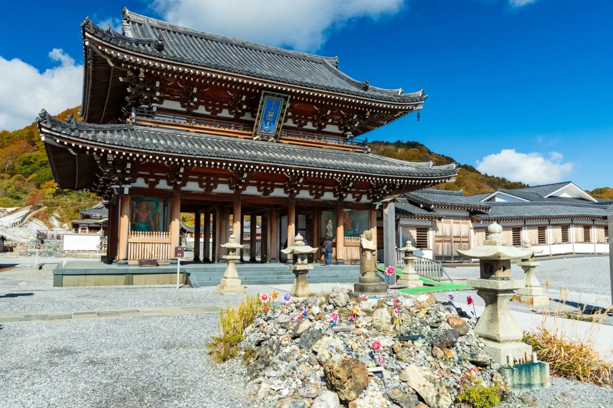
Stay
プラザホテルむつ
Purazahoteru Mutsu
ホテルユニサイトむつ
Hoteruyunisaito Mutsu
ホテルニューグリーン
Hoterunyuuguriin
はねやホテル
Haneya Hoteru
むつパークホテル
Mutsu Paakuhoteru
むつグランドホテル
Mutsu Gurandohoteru
ホテルサンマモルむつ
Hoterusanmamoru Mutsu
Dining
牛角 むつ店

Gyuukaku Mutsu Mise
K-Stadium
K-Stadium
家政家
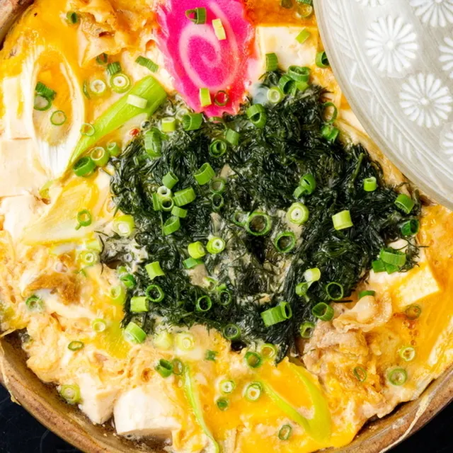
Kasei Ie
スカイレストラン
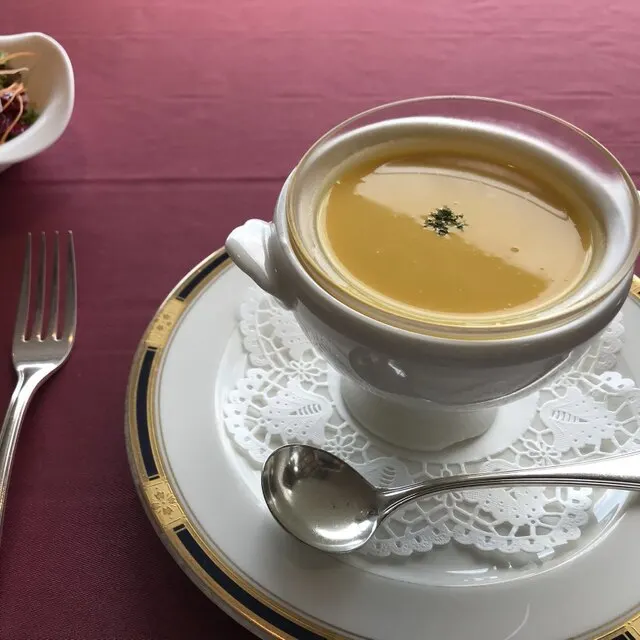
Sukairesutoran
マクドナルド むつ中央店
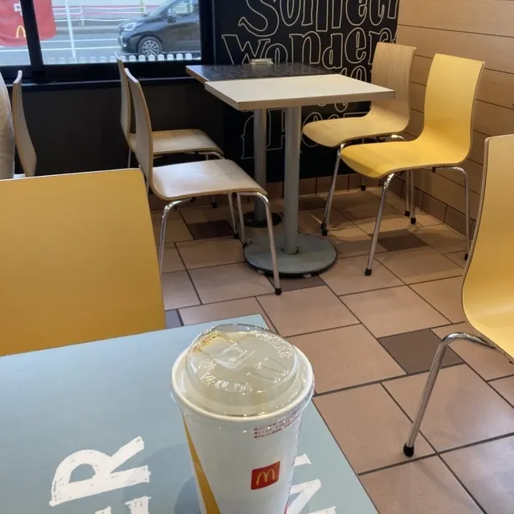
Makudonarudo Mutsu Chuuou Mise
福士 ラーメン
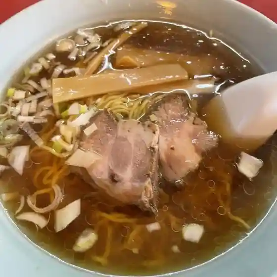
Fukushi Raamen
ラグノオ マエダ本店
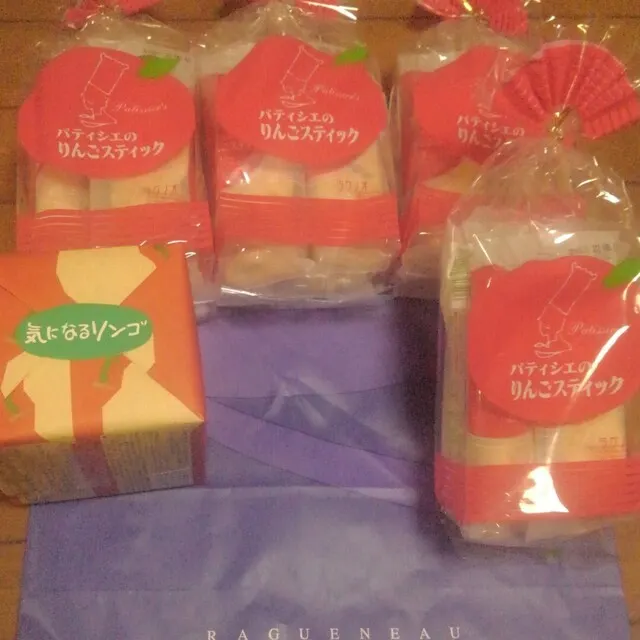
Ragunoo Maeda Honten
かちかち山
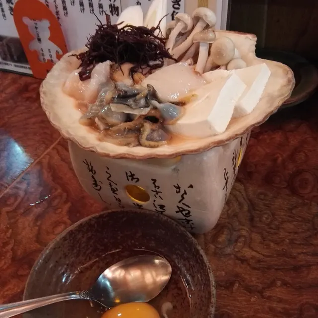
Kachikachi Yama
プリモピアット
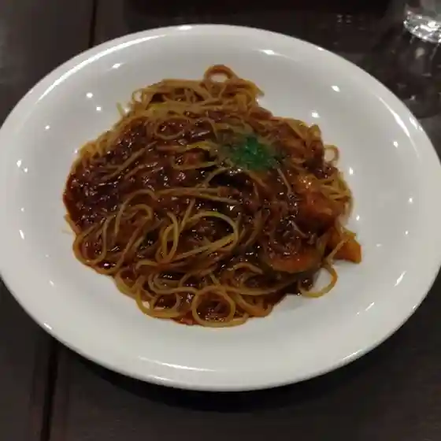
Purimopiatto
岡村旅館
Okamura Ryokan
チャーリーズジャム
Chaariizujamu
北彩屋
Kita Sai Ya
東寿し
Higashi Hisashi Shi
とりよし・やきとり
Toriyoshi Yakitori
舟だまり
Fune Damari
布施 おやき屋
Fuse Oyaki Ya
松木屋食堂
Matsuki Ya Shokudou
みゆき食堂
Miyuki Shokudou
海産食品 みなみや
Kaisan Shokuhin Minamiya
焼肉レストラン 一心亭 むつ店
Yakiniku Resutoran Isshin Tei Mutsu Mise
奥薬研修景公園 レストハウス
Oku Yagen Shuukei Kouen Resutohausu
やなぎや 金谷店
Yanagiya Kanaya Mise
パザパ
Pazapa
あすなろ
Asunaro
Sights
Yunokawa Onsen
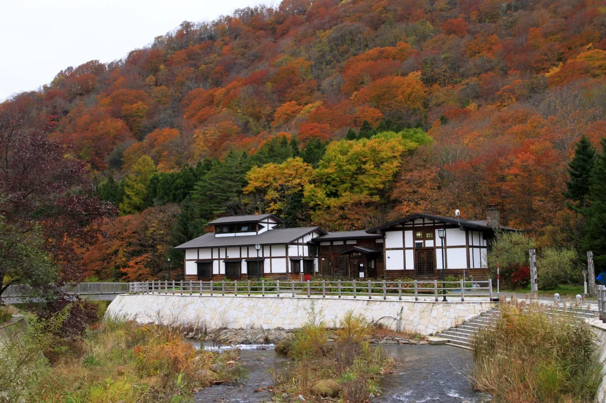
Yunokawa Onsen is an idyllic hot spring located 14 km from the mountainous town of Kawauchi, which served as the setting for Tsutomu Mizukami's novel Kigakaikyo.
Roadside Station Kawauchiko (Nodai Kogen Center)
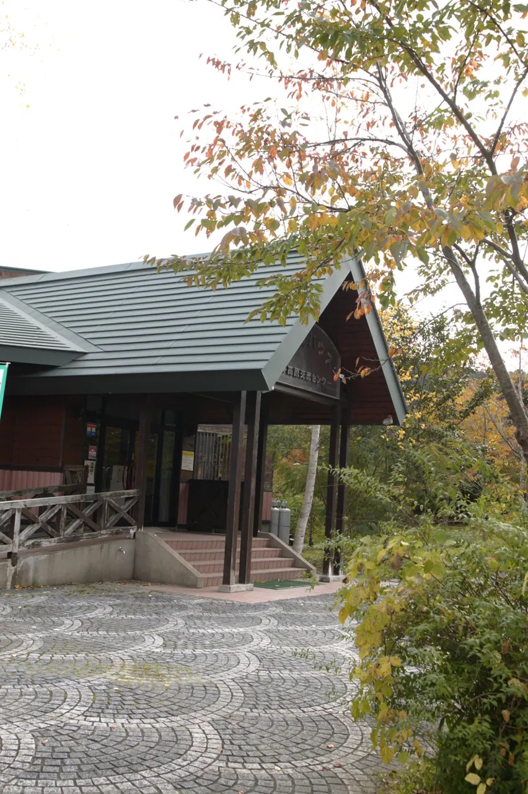
Log-house center of the Kawauchi Lakeside Park on the way to Hotokegaura.
Hayakakenuma Park
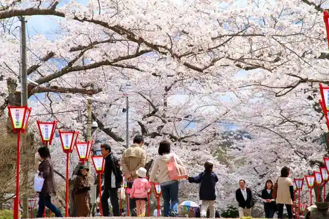
Mutsu's busiest cherry-blossom spot, a scenic park opened to the public in 1964.
Wakinosawa Morning Market
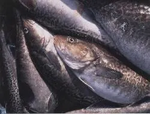
Specialty-products fair held with the Wakinosawa fishermen's cooperative, featuring cod and other local seafood.
Wakinosawa Distribution Center
Shimokita tourist information and rest stop near Wakinosawa Port, also selling Mutsu Bay ferry tickets.